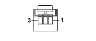

N016 REAR WINDOW WIPER MOTOR (REAR)
- Path
- Electrical equipment > 3 CONNECTORS > N ELECTRIC MOTORS AND ACTUATORS > N016 REAR WINDOW WIPER MOTOR > N016 REAR WINDOW WIPER MOTOR (REAR)
- Kind
- connector pinout (pin -> wire colour -> other end)
- Applies to
- all engines; all production periods
- Interactive page
- https://sloeber94.github.io/elrnDB-fPnd/en/#/169003489
Applies to: all engines; all production periods

Wiring | Colour |
|---|---|
BIANCO (white) |
Pin | Cable | Destination | |||
|---|---|---|---|---|---|
Sec.. | Colour | Node | Connect. | Pin | |
1 | 0,75 | NS (black with pink stripe) | 1 | ||
2 | 0,5 | NZ (black with violet stripe) | 6 | ||
3 | 0,75 | NV (black with green stripe) | 3 | ||